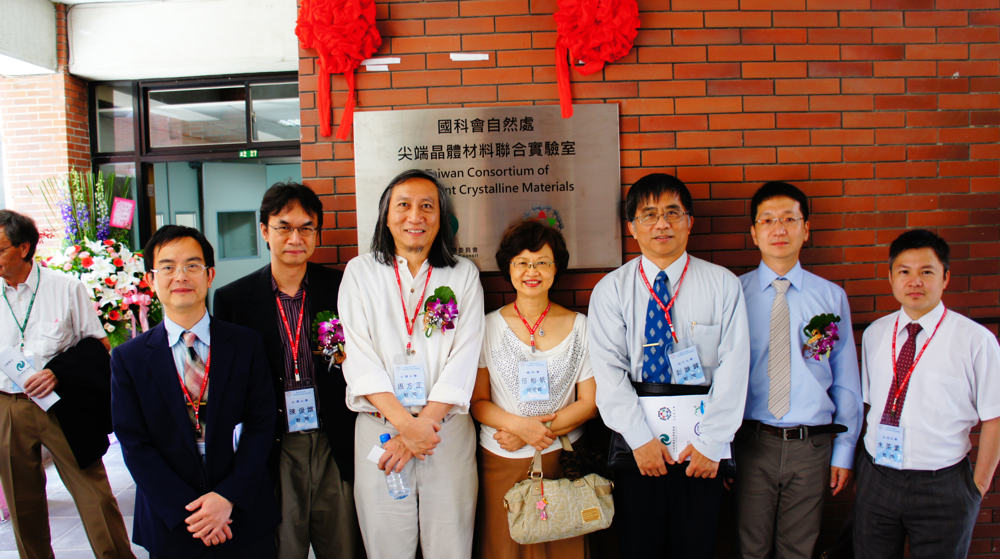
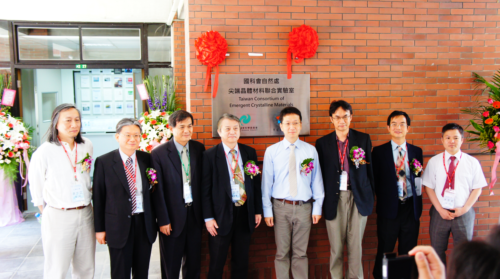

計劃內容 合作教授 新穎材料開發 計劃內容 建立一套二六族半磁性半導體的分子束磊晶系統核心設施，包括碲、硒、鎂、錳、鋅及鎘等元素，及氮與二氯化鋅做正負型參雜。所以可以製作(碲化錳鋅/硒化鋅)量子點、(硒化錳鎘/硒化鋅)量子點、(碲化錳鎘/碲化鋅)量子點、(硒化鋅/硒化錳鋅/硒化鋅)三明治結構製作的自旋過濾器等。另外也加氧電漿源研究氧化錳鋅相關的量子結構。除了提供各式各樣的樣品給國內外物理學家研究新穎的自旋物理外，本研究團隊將對二六族半磁性半導體單量子點自旋物理做深入的研究。
計劃內容
建立一套二六族半磁性半導體的分子束磊晶系統核心設施，包括碲、硒、鎂、錳、鋅及鎘等元素，及氮與二氯化鋅做正負型參雜。所以可以製作(碲化錳鋅/硒化鋅)量子點、(硒化錳鎘/硒化鋅)量子點、(碲化錳鎘/碲化鋅)量子點、(硒化鋅/硒化錳鋅/硒化鋅)三明治結構製作的自旋過濾器等。另外也加氧電漿源研究氧化錳鋅相關的量子結構。除了提供各式各樣的樣品給國內外物理學家研究新穎的自旋物理外，本研究團隊將對二六族半磁性半導體單量子點自旋物理做深入的研究。

